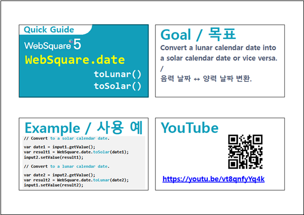

날짜(yyyyMMdd) 형식의 문자열을 양력 날짜로 변환하는예제입니다. 이 기능은 함수 'WebSquare.date.toSolar'를 사용하여 구현할 수 있습니다.
음력 날짜로 변환하는 경우 함수 'WebSquare.date.toLunar'로 구현할 수 있습니다.
'WebSquare.date.toSolar'는 아래의 엔진부터 제공됩니다.
- RC: 5.0_5.4774B.20221202.165615 (2022년 12월 02일 15시 56분 빌드 버전 부터)
- GA: 5.0_5.4877A.20230405.131227 (2023년 04월 05일 13시 12분 빌드 버전 부터)
날짜(yyyyMMdd) 형식의 문자열을 양력 날짜로 변환하기
STEP 1. 초기 상태를 확인합니다.
컴포넌트 InputCalendar에 초기 값으로 '19460101'이 할당되었고, 이 날짜에 대한 실행 결과 값으로 '19460202'이 출력되어 있습니다.
그림 1.브라우저(Chrome) 실행 예시
STEP 2. InputCalenar의 값을 변경하여 양력으로 변환합니다.
InputCalendar의 값을 '20240815'로 입력하고 버튼 양력으로 반환받기를 클릭합니다.STEP 3. 실행된 결과를 확인합니다.
실행 결과에 '20240917'이 출력됩니다.
함수 'WebSquare.date.toSolar'를 사용하여 구현합니다. 세부 스크립트는 아래의 예시에 작성되어 있습니다.
스크립트
// 예제 파일에서는 스크립트 'scwin.ica_exam_1_toSolar'에 작성되어 있습니다. // 문자열 '19460101'를 양력 날짜로 반환받습니다. let result = WebSquare.date.toSolar('19460101'); // 반환 예시) 19460202
WebSquare.date.toSolar
WebSquare.date.toLunar
WebSquare.date - toSolar(), toSolar()
링크 : https://youtu.be/vt8qnfyYq4k
